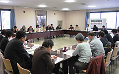

- 【日 時】
- 4月19日(木)13:30～15:30
- 【場 所】
- 埼玉会館5C会議室
- 【参加者】
- 28人(18団体)＋4人(事務局)
■議 題
- 各団体参加者の自己紹介をしました。
- 岩岡事務局長あいさつ
- 第47回埼玉県消費者大会の決算について
- 第48回埼玉県消費者大会分担金(案)について
- 記念講演について
- プレ学習会について
- 分科会について
- ｢市町村における消費生活関連事業調査｣の実施について
消費者被害などの問題や課題があります。実行委員会で話を深め、今大会も1,000人参加を目指して頑張りましょう。
（1）運営体制
実行委員長(埼玉県生協ネットワーク協議会会長)
副実行委員長(埼玉公団住宅自治会協議会常任理事）
事務局長(埼玉県消費者団体連絡会事務局長）
事務局次長(埼玉県消費者団体連絡会事務局次長)
事務局(埼玉県消費者団体連絡会事務局)
（2）第48回埼玉県消費者大会開催日程と会場
10月12日(金) 埼玉会館大・小ホール・会議室
講師を浅岡美恵さん(気候ネットワーク代表・弁護士)で確認しました
・日時：第1回は6/19(火)、第2回は7/20(金)
・テーマ：「震災の実情から考えること｢税金と社会保障｣が候補として上がっており、講師候補者について意見交換をしました。ご意見をもとに事務局が検討し、第2回実行委員会までに各団体でご案内が出来るよう進めていきます。